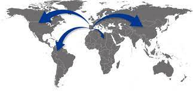

La web de la empresa española lider en diseño de páginas web
ORIGEN DE WEB DESIGNERS SPAIN S.A.
Publicado el 10/09/2002
Nuestra empresa se dedica al diseño de páginas web desde el año 2001, y fue fundada por alumnos del Instituto FOC de Granada.
Nuestros 20 años de experiencia y unos resultados evidentes nos sitúan como una de las mayores empresas del sector a nivel nacional,
con contratos internacionales cada vez más numerosos.
La contínua inversión en reciclaje y formación de nuestro personal, y en equipamientos e instalaciones, nos llevaron a poder
abarcar contratos de gran peso, y entregar proyectos de gran importancia en un tiempo récord, sin por ello verse afectada la calidad del resultado final.
PRIMEROS PASOS EN EL EXTRANJERO
Publicado el 17/01/2007.

Con la ll
WEB DESIGNERS EN PRENSA Y SU SALTO AL IBEX35
Publicado el 15/06/2012.
Nuestra empresa se dedica al diseño de páginas web desde 1999, y fue fundada por alumnos del Instituto FOC de Granada.
Más de 20 años de experiencia y unos resultados evidentes nos sitúan como una de las mayores empresas del sector a nivel nacional,
con contratos internacionales cada vez más numerosos.
La contínua inversión en reciclaje y formación de nuestro personal, y en equipamientos e instalaciones, nos han llevado a poder
firmar contratos de importancia y entregar proyectos de gran peso en un tiempo récord, sin por ello verse afectada la calidad del resultado final.